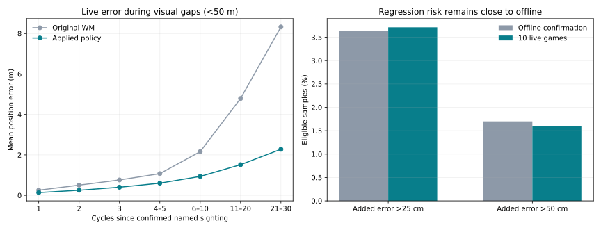

Later integration finding: the earlier apply path duplicated derived player-cache entries and could repeat identity inference. The current cache-v2 build fixes this. These historical match outcomes are not a clean gameplay evaluation of the intended prediction policy. See the final report.
Integration passes the pilot checks. Left-only application is active and position-error reduction is consistent with the frozen offline confirmation. This is a snapshot of the first ten complete games, not a win-rate conclusion.
Generated 2026-11-16 23:30 UTC.
Source: /home/nader/workspace/denoise/logs/exp5-live-preserve.
Games still running at the snapshot were excluded. Both teams' 220 observer
logs finalized successfully. Every eligible target-cycle has equal weight.
The denominator is 5,940,546 eligible stale target-cycles observed by the left team: identified valid stock track, positive original position count, confirmed named-sighting age 1–30, PlayOn and valid same-cycle truth. Unselected rows keep stock WM and remain in the denominator. Fresh/invalid tracks and unsupported horizons are not included in these accuracy numbers.
| Metric | Frozen offline confirmation | First 10 live games |
|---|---|---|
| Original WM mean error | 134.98 cm | 142.59 cm |
| Selected-policy mean error | 52.30 cm | 52.97 cm |
| Reduction in mean error | — | 62.85% |
| Added error >25 cm vs WM | 3.64% | 3.71% |
| Added error >50 cm vs WM | 1.70% | 1.61% |
| Added error >100 cm vs WM | — | 0.75% |
| Largest added error | 11.82 m | 13.26 m |
Offline and live games have different trajectories, so matching means are evidence of a consistent effect, not an exact replay. “Added error” is used position error minus original WM error on the same observer-target-cycle. The p95 absolute used error is 215.79cm. Below50m, 61.05% of eligible positions were replaced; 55.47% improved by >1cm and 5.40% worsened by >1cm; the rest were unchanged or changed by at most 1cm.

Named-sighting age is not always posCount: anonymous WM refreshes can lower the latter without providing a confirmed named sighting. Every row below is restricted to original posCount>0, so current count-zero refreshes are preserved.
| Named-sighting age | Original mean cm | Used mean cm | Reduction | Added error >25cm |
|---|---|---|---|---|
| 1 | 25.55 | 13.68 | 46.4% | 3.17% |
| 2 | 50.52 | 25.23 | 50.1% | 3.16% |
| 3 | 76.12 | 40.13 | 47.3% | 3.39% |
| 4–5 | 107.34 | 60.23 | 43.9% | 4.45% |
| 6–10 | 216.11 | 93.65 | 56.7% | 5.46% |
| 11–20 | 478.88 | 151.70 | 68.3% | 4.80% |
| 21–30 | 832.50 | 227.90 | 72.6% | 4.49% |
apply, preserve, adaptive, identical expected
model bundle. Right: 110 observers, all off, adaptive, zero corrections.objects: used WM position,
original position, application flag and effective count agree with prediction
logs. One right observer was also checked: no overlay. No application outside
PlayOn in these routing checks.For sampled observers l6, l9 and r6, fresh localized named-player positions, fresh ball positions and see-updated self positions have zero mean error at the logger's displayed precision. This supports that visual quantization is disabled. A WM count-zero track can still have association/fusion error; count zero alone is not proof that a confirmed named visual measurement exists.
Worst below50m added-error case:
202611161913_30182/l_7, cycle 4857, target
right unum 10. Last named sighting was 30
cycles old; original posCount was 8. True observer distance
was 19.17m. Error increased from
16.09m to 29.35m despite a routing
score of 0.939. That score is not a calibrated probability of
correctness. This is a real rare regression, not removed from the averages.
These same ten games finished 27–36 goals, 3 wins /1 draw /6 losses for the treatment side. Improved position accuracy has not yet demonstrated better gameplay. Ten games are too few to estimate the gameplay effect reliably.
Continue the planned preserve-count batch without changing the frozen model or threshold mid-run. Then compare match results, positional error, tail risks and tactical situations over the complete batch. Test zero-count separately to distinguish the effect of position correction from age-based decision gates.
cd /home/nader/workspace/denoise
.venv-exp5-s1/bin/python \
rcssserver-denoise/experiments/exp5/exp5-s1/code/summarize_player_gap_live.py \
logs/exp5-live-preserve --complete-games-only --limit 10 \
--output logs/exp5-live-preserve/pilot-under50.json
The reader now processes CSVs in chunks and retains only compact paired arrays,
so summary generation does not load all prediction columns into RAM. Its
results were regression-checked against the previous short-match summarizer.
The verifier now supports --observer l_6 --observer l_9 and output replay
without feature diagnostics. JSON evidence is alongside this report:
under50.json, output-check.json, routing-check.json, runtime-check.json and
game-scores.json. The frozen game IDs are recorded in under50.json.